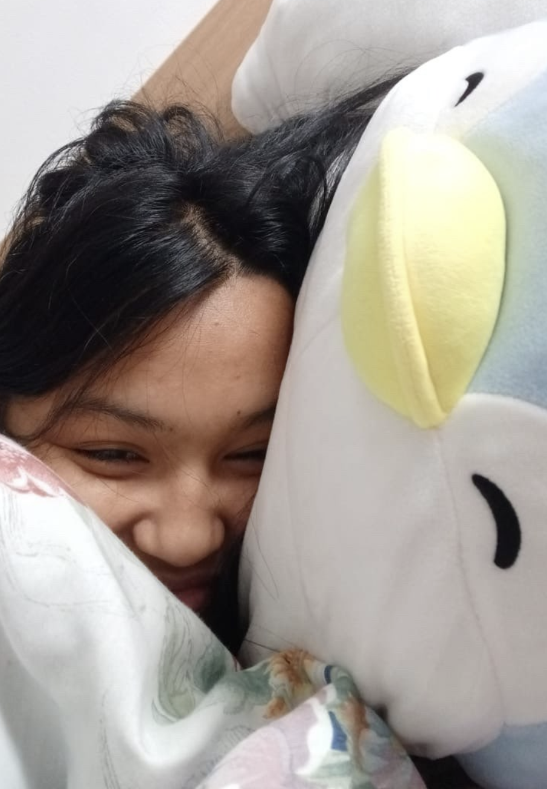

Merlin #2

We now see the modern day Merlin in his natural habitat, in the bed of this wonderful lady. Note the giant smile on both of their faces. Do not note the fact that Merlin cannot physically change his facial expression. He is happy, I assure you. Used as a pillow, Merlin's muscular frame comes in handy. We see here as his torso is being compressed under the weight of the lady's head, which contains a massive brain, necessary to contain such intelligence of course. A little known fact about penguins rescued by Miniso: their muscle tissue turns incredibly soft, to the point of squishiness, as seen here. No, he is not just fat. He's also big boned.
